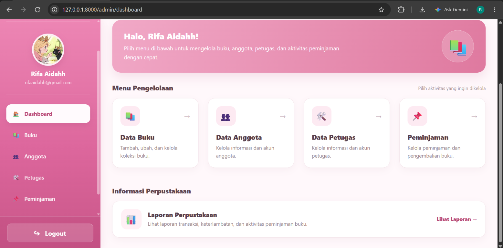

Web development dengan Laravel
Mengembangkan aplikasi web menggunakan Laravel dan PHP, mulai dari pengelolaan database hingga pembuatan fitur aplikasi.
Laravel · PHPMahasiswa Sistem Informasi
Halo, saya Rifa! Saya tertarik dengan dunia teknologi dan pengembangan aplikasi. Saya senang belajar membuat aplikasi web dan mobile, mengembangkan fitur, serta mencoba hal baru seperti integrasi chatbot berbasis AI.
Cerita saya
Saya mahasiswa Sistem Informasi di Universitas Bina Sarana Informatika (BSI). Awalnya saya hanya penasaran bagaimana sebuah website bisa menyimpan dan menampilkan data. Rasa penasaran itu semakin tumbuh ketika saya mulai mengenal Laravel dan Flutter di perkuliahan.
Selain belajar membuat aplikasi, saya juga senang merancang tampilannya, mulai dari mengatur tata letak dan memadukan warna, hingga membuat halaman yang menarik dan nyaman dilihat.
Setiap proyek mengajarkan satu hal baru.
Dari membangun halaman admin, mengerjakan toko online bersama teman, hingga membuat chatbot AI, saya belajar bahwa aplikasi yang baik bukan hanya yang berjalan dengan benar, tetapi juga mudah digunakan dan bermanfaat bagi penggunanya.
Skill
Berbagai kemampuan yang saya kembangkan melalui pembelajaran di perkuliahan dan pengalaman mengerjakan proyek.
Mengembangkan aplikasi web menggunakan Laravel dan PHP, mulai dari pengelolaan database hingga pembuatan fitur aplikasi.
Laravel · PHPMembuat aplikasi Android sederhana menggunakan Flutter dengan fitur yang disesuaikan dengan kebutuhan pengguna.
FlutterMenggunakan dan mengintegrasikan REST API untuk menghubungkan aplikasi dengan layanan data serta mengelola pertukaran data.
REST APIMembuat chatbot berbasis AI sederhana yang dapat merespons pertanyaan dan membantu pengguna mendapatkan informasi.
AI · ChatbotMampu bekerja sama dalam tim, membagi tanggung jawab, serta berkontribusi dalam menyelesaikan proyek bersama.
Kerja timProyek
Berbagai proyek yang saya kerjakan selama perkuliahan, baik secara individu maupun bersama tim, sebagai bentuk penerapan ilmu dan keterampilan yang telah dipelajari.
Laravel · Proyek Perkuliahan
Aplikasi berbasis web untuk membantu pengelolaan perpustakaan, mulai dari data buku, anggota, petugas, hingga transaksi peminjaman.
Tampilan: Aplikasi Web (Admin)
Peran: Mengembangkan fitur pengelolaan data perpustakaan.

AdminLaravel · Proyek Perkuliahan
Aplikasi penjualan buket berbasis web yang memungkinkan pelanggan melihat katalog dan melakukan pemesanan. Admin dapat mengelola produk serta memantau pesanan yang masuk.
Tampilan: Dashboard Admin dan Halaman Pelanggan
Peran: Mengembangkan halaman admin dan pengguna, berdua dengan rekan tim.
Flutter · REST API · Proyek Perkuliahan
Aplikasi mobile untuk mengelola data resep makanan tradisional, terhubung ke REST API untuk mengambil, menambah, mengubah, dan menghapus data.
Tampilan: Aplikasi Mobile (Admin)
Peran: Mengembangkan bagian admin untuk mengelola data resep.
Pelatihan
Mengikuti pelatihan untuk menambah wawasan dan pengalaman dalam pengembangan aplikasi.
Asisten belajar berbasis AI
Merancang dan membangun Pinky AI, chatbot asisten belajar yang memanfaatkan Gemini API untuk mengubah materi menjadi ringkasan dan menjawab pertanyaan pengguna.
Kontak
Tertarik untuk berdiskusi, berkolaborasi, atau memiliki peluang proyek bersama? Saya terbuka untuk mengenal orang baru dan bertukar ide.